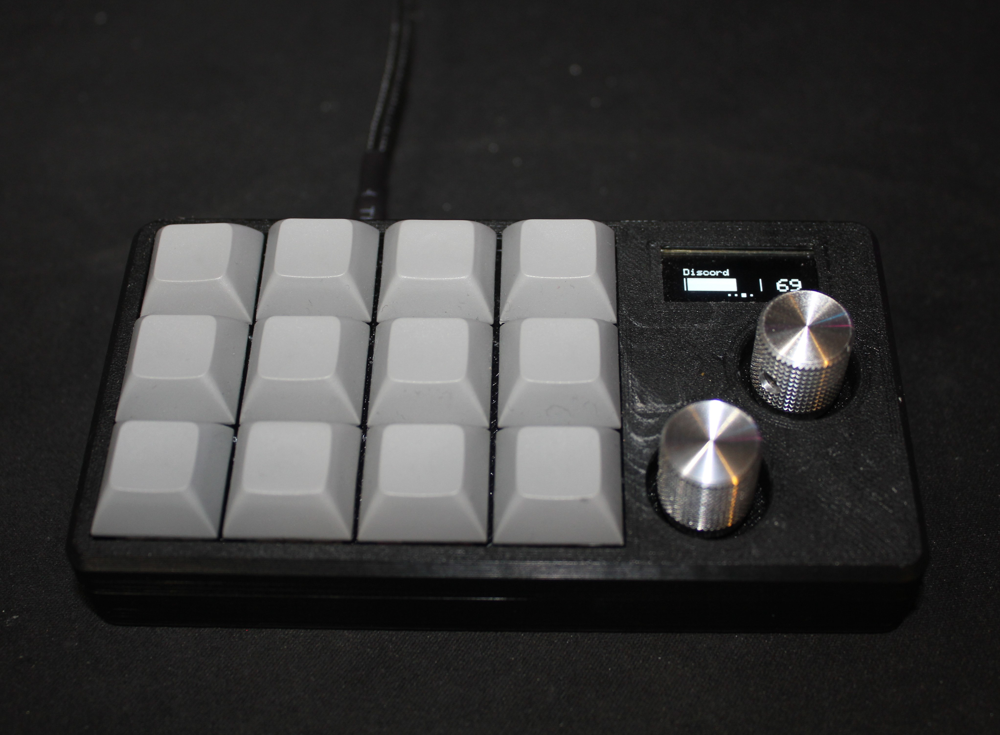

The JoeDeck is a small computer peripheral device that allows users to assign macros, or pre-programmed sequences of keystrokes that can be executed with a single button press. These macros can be used for a variety of purposes, such as in-game shortcuts or automating repetitive tasks. In addition to this, it gives you the ability to adjust the volume levels of your programs and output/input devices, so you can mix/balance them to your heart's content. It's commonly used by gamers and programmers as a way to improve their productivity and efficiency.
Arduino Pro-Micro and Arduino Nano
USB-C port
OLED screen